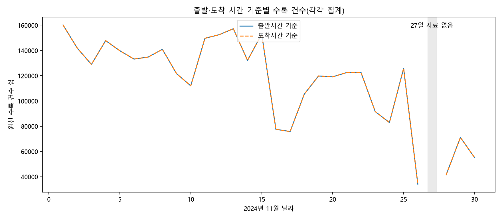
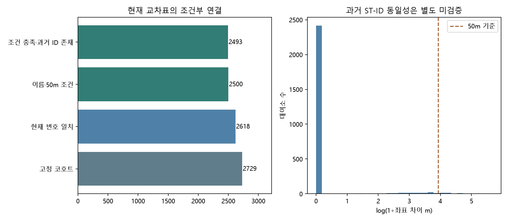

따릉이 대여·반납 자료를 실제 입력으로 준비한다
현재 수량만으로 부족 위험을 설명하기 어려운 곳에 과거 출발·도착 패턴이 도움이 되는지 확인하기 위해 선행월 자료를 준비한다. 2025년 개발 실험보다 앞서 종료된 2024년 11월 자료를 고정하고, 미래 실제 이동을 입력하지 않는다.
| 원천 수록 행 | 6,364,061행(두 시간 기준 포함) |
|---|
| 일파일 | 30개 중 실제 행이 있는 파일 29개 |
|---|
| 출발시간 기준 수록 건수 합 | 3,349,743건 |
|---|
| 도착시간 기준 수록 건수 합 | 3,349,743건(출발 합계와 더하지 않음) |
|---|
| 원천 ST-ID | 2,743개 |
|---|
| 고정 코호트·요일·시간 셀 | 458,472개 |
|---|
| 조건 충족·과거 ID 존재 | 2,493/2,729곳(91.35%) |
|---|
| 모델 비교 진행 | 추가 자료 9/9개 비교의 계산을 검수한다. |
|---|
먼저 확인한 품질 문제를 처리한다
11월 27일 파일은 UTF-8 헤더만 있고 데이터 행이 없다. 다른 29개 파일은 CP949로 읽는다. 엄격한 해독과 열 검사를 통과한 파일만 처리하며, 27일을 실제 이용 0으로 바꾸지 않는다. 같은 요일의 비어 있지 않은 일파일을 수록률 분모로 사용한다.
출발시간 기준과 도착시간 기준을 따로 집계한다. 한 이동의 서로 다른 시간 기준을 합산해 두 배로 세지 않는다. 대여소·시각에 행이 없으면 평균은 결측으로 남기고 수록 일수와 기록 존재 마스크를 함께 둔다. 이용분·거리의 결측 때문에 유효한 건수까지 삭제하지 않는다.

회색 영역은 실제 0건이 아닌 헤더만 있는 날짜를 표시한다. 행이 있는 날짜도 전체 이동의 완전 수록을 인증한 것은 아니다.
연결 범위를 보수적으로 제한한다
현재 bikeList의 ST-ID와 시민용 대여소 번호를 연결한다. 2024 코호트와 현재 번호가 같고 공백·유니코드만 정규화한 이름이 일치하며 좌표 차이가 50m 이내인 곳을 조건부 연결한다. 과거 ST-ID의 실제 동일성은 별도 미검증으로 유지한다. 고정 코호트를 줄이지 않고 미연결 입력을 결측으로 둔다.

현재 교차표의 연결 조건을 통과한 수와 과거 흐름에서 실제 ID가 나타난 수를 구분한다.
다음 모델에서 비교할 입력을 정리한다
버스정류소 거리·반경별 개수 4개, 선행 흐름의 평균·수록률·결측 마스크 7개를 작은 입력 배열로 준비한다. 흐름은 입력 t의 다음 시간 t+1에 해당하는 요일·시각을 조회한다. 공개 전 입력 차단, 자정 요일 전환, 입력 순서·중복, 미연결 결측을 검사한다.
같은 105개 특징 모델에 버스, 흐름, 둘을 각각 더하는 A/B/C 총 9개 비교를 계획으로 고정한다. 기존 v4 큐 다음에 순차 학습하고 진행 상태와 성과는 추가 공공데이터 비교보고서에서 확인한다. 이미 확인한 개발 기간의 추가 비교이며 독립 최종 시험으로 제시하지 않는다.
해석 범위와 남은 확인을 기록한다
공식 목록의 수정일은 2024-12-08이다. 목록에는 125.93MB가 표시되지만 실제 응답은 123,792,524바이트를 받는다. 날짜·구성원·압축검사·해시로 받은 본문을 확인하며 이 크기 차이를 임의로 해소했다고 주장하지 않는다. 최초 공개·당시 수신·원본 불변·과거 마스터는 미검증이다.
단일 11월의 패턴이 봄·여름에도 맞는지는 실험해야 한다. 현재 교차표와 선행 자료의 한계가 남아 있으므로 추가 결과는 조건부 자료 비교로 제시한다. 준비만으로 성능 개선이나 실제 대여 성공을 확인한 것으로 표현하지 않는다.
각 일파일의 출발·도착 기준 수록 합계가 같다는 것은 확인한다. 자정을 넘는 이동에서 기준 날짜가 실제 도착 날짜와 어떻게 연결되는지는 원천 명세만으로 확정하지 못한다. 프로필은 원천이 표시한 날짜·시간 기준의 과거 집계로 사용하며 실제 미래 유입량으로 해석하지 않는다.
서울시 공식 원천 · 자료 준비 기준 · 특징 정의와 근거 · 원천 전수검수 · 독립 집계 검사